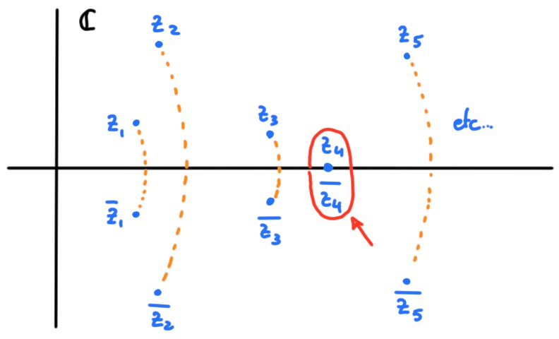
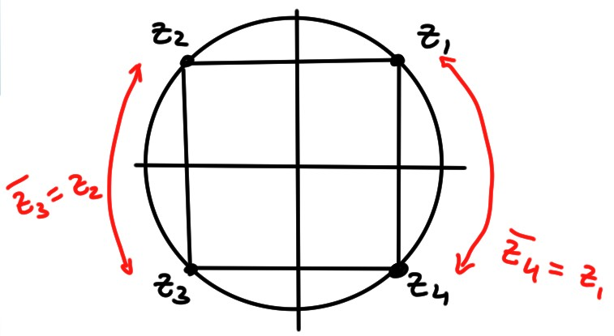

4.6 Polynômes complexes et factorisation
Soit \(P(z)\) un polynôme complexe en \(z\):
\[ P(z)=a_0+a_1z+a_2z^2+\dots+a_nz^n\,,
\]
où les coefficients \(a_k\in \mathbb{C}\).
On dit que \(P\) est de degré \(n\) si \(a_n\neq 0\).
Si \(z_*\in \mathbb{C}\) est tel que
\[
P(z_*)=0\,,
\]
\(z_*\) est appelé racine du polynôme.
On sait que dans les réels, certains polynômes (comme par exemple
\(x^2+1\)) ne
possèdent pas de racines réelles.
Dans les complexes, c'est très différent:
(Théorème Fondamental de l'Algèbre)
Dans \(\mathbb{C}\), tout polynôme \(P\) de degré \(n\) possède \(n\) racines: il existe
\(z_1,\dots,z_n\in \mathbb{C}\) tels que
\[ P(z_k)=0\qquad \forall k=1,2,\dots,n\,.
\]
De plus, \(P\) peut se factoriser comme suit:
\[
P(z)=a_n(z-z_1)\cdots (z-z_n)\,.
\]
Preuve:
Voir cours d'analyse complexe.
Factorisons le polynôme
\[
P(z)=z^2+2z+2\,.
\]
L'équation \(P(z)=0\)
ne possède pas de solutions réelles puisque
\(\Delta=4-8=-4<0\). Par contre, par le Théorème Fondamental de l'Algèbre, \(P(z)\) doit posséder deux racines complexes. On propose deux méthodes pour les trouver.
-
On pose \(z=a+b\mathsf{i}\) (où \(a\) et \(b\) sont réels!), que
l'on injecte dans l'équation \(z^2+2z+2=0\), pour trouver
\[
(\underbrace{a^2-b^2+2a+2}_{=0})+\mathsf{i}(\underbrace{2ab+2b}_{=0})=0\,.
\]
On a donc un système
\[\begin{aligned}
a^2-b^2+2a+2&=0\\
2b(a+1)&=0\,.
\end{aligned}\]
Considérons la deuxième ligne: \(2b(a+1)=0\).
- Cas 1): \(b=0\). Inséré dans la première ligne, on obtient \(a^2+2a+2=0\), qui
n'a pas de solution (réelle!), donc pas de solution complexe correspondante.
-
Cas 2): \(a=-1\). Inséré dans la première ligne,
on obtient \(b=\pm \sqrt{1}=\pm 1\).
On en déduit l'existence de deux solutions,
\(z_1=-1-\mathsf{i} \) et \(z_2=-1+\mathsf{i}\).
- On utilise la formule classique
\[
z=\frac{-b\pm \sqrt{b^2-4ac}}{2a}=\frac{-2\pm \sqrt{-4}}{2}=-1\pm\sqrt{-1}=-1\pm
\mathsf{i}\,.
\]
La formule \(\frac{-b\pm\sqrt{b^2-4ac}}{2a}\) peut s'utiliser aussi
dans le cas général, en particulier lorsque
\(\omega=b^2-4ac\in \mathbb{C}\). On peut alors calculer les racines de \(\omega\)
comme dans la section précédente.
La factorisation d'un polynôme de grand degré peut être compliquée! On a souvent
avantage à commencer par trouver des racines ''faciles'', puis factoriser peu à
peu le polynôme.
Factorisons
\[P(z)=z^3-(2-2\mathsf{i})z^2-3\mathsf{i} z+(1+\mathsf{i})\,.
\]
Pour commencer,
remarquons que \(P(1)=0\), ce qui signifie que \(P\) est de la forme
\[P(z)=(z-1)Q(z)\,.
\]
On trouve \(Q(z)\) en effectuant la division euclidienne de
\(P(z)\) par \((z-1)\), qui donne \(Q(z)=z^2-(1-2\mathsf{i})z-(1+\mathsf{i})\).
On peut alors factoriser \(Q\) à l'aide de la formule
\(\frac{-b\pm\sqrt{b^2-4ac}}{2a}\), ou alors remarquer que
\(Q(-\mathsf{i})=0\), ce qui permet de factoriser
\(Q(z)=(z+\mathsf{i})(z-(1-\mathsf{i}))\).
On a donc
\[P(z)=(z-1)(z+\mathsf{i})(z-(1-\mathsf{i}))\,.\]
Par contre, la factorisation d'un polynôme de la forme
\(P(z)=z^n-\omega\) s'obtient directement, à partir des racines \(n\)-èmes de
\(\omega\).
Par un des exemples traités dans la section précédente, la factorisation de
\(P(z)=z^3-\mathsf{i}\) est donnée par
\[
P(z)=
(z-e^{\mathsf{i} \frac{\pi}{6}})
(z-e^{\mathsf{i} \frac{5\pi}{6}})
(z-e^{\mathsf{i} \frac{3\pi}{2}})\,.
\]
Racines multiples
Ce que le théorème fondamental
ne dit pas, c'est si les racines sont distinctes; et ce n'est
pas forcément le cas.
Si un facteur \((z-z_*)^{n_*}\) apparaît dans la
factorisation de \(P\), on dit que \(z_*\) est une
racine de \(P\)
de multiplicité \(n_*\).
\(P(z)=z^2-2\mathsf{i} z-1=(z-\mathsf{i})^2\)
possède deux racines confondues, \(z_1=z_2=\mathsf{i}\). Donc
\(\mathsf{i}\) est une racine de de multiplicité \(2\).
En tenant compte des éventuelles multiplicités, la
factorisation d'un polynôme de degré \(n\)
est donc de la forme
\[
P(z)=a_n(z-z_{i_1})^{n_1}(z-z_{i_2})^{n_2}\cdots(z-z_{i_k})^{n_k}\,,
\]
où maintenant les
racines \(z_{i_1},\dots,z_{i_k}\) sont toutes distinctes, et où les
entiers \(n_1,\dots,n_k\) satisfont à la condition:
\(n_1+n_2+\cdots+n_k=n\).
Racines d'un polynôme à coefficients réels
On a vu plus haut que le polynôme \(z^2+2z+2\), dont tous les
coefficients sont réels, possède deux racines, \(z_1=-1-\mathsf{i}\) et
\(z_2=-1+\mathsf{i}\), et que celles-ci sont en fait
conjuguées l'une par rapport à l'autre:
\[ z_2=\overline{z_1}\,. \]
Ceci ne fait que refléter un résultat général:
Si les coefficients \(a_k\) d'un polynôme
\(P(z)\) sont tous réels, \(a_k\in \mathbb{R}\),
et si \(z_*\) est une racine de \(P\),
\(P(z_*)=0\), alors \(\overline{z_*}\)
est aussi racine de \(P\): \(P(\overline{z_*})=0\).
Preuve:
Supposons que \(P(z_*)=0\). Alors
\[\begin{aligned}
P(\overline{z_*})
&=a_0+a_1\overline{z_*}+a_2\overline{z_*}^2+\cdots+a_n\overline{z_*}^n\\
&=a_0+a_1\overline{z_*}+a_2\overline{z_*^2}+\cdots+a_n\overline{z_*^n}\\
&=\overline{a_0+a_1{z_*}+a_2{z_*^2}+\cdots+a_n{z_*^n}}\\
&=\overline{P(z_*)}\\
&=\overline{0}=0\,,
\end{aligned}\]
donc \(\overline{z_*}\) est aussi racine de \(P\).
Ce résultat a deux conséquences très utiles. La première:
Si \(P\) est de degré impair et que tous ses coefficients sont réels,
alors il possède au moins une racine réelle.
Preuve:
En effet, si \(P\) est de degré impair, alors par le théorème fondamental
de l'algèbre
l'ensemble de ses racines \(R\)
contient un nombre impair d'éléments (même si
certaines racines sont confondues).
Par la proposition ci-dessus, si \(z\in R\) est une racine telle que
\(\mathrm{Im}(z)\neq 0\), alors \(R\) contient aussi \(\overline{z}\neq
z\). On peut donc retirer de \(R\) toutes les paires de racines distinctes
conjuguées de ce type.

Puisque \(R\) contient au départ un nombre impair
d'éléments, on conclut qu'après avoir retiré toutes ces pairs, il doit rester au
moins une racine dont la partie imaginaire est nulle; cette racine est donc
réelle.
Factorisation de polynômes à coefficients réels
La deuxième conséquence est sur la structure de la factorisation des polynômes
réels:
Tout polynôme à coefficients réels \(P(x)\)
peut se factoriser en un produit de polynômes irréductibles
de degré \(1\)
ou \(2\), à coefficients réels eux aussi.
Preuve:
Avec les mêmes coefficients réels,
laissons la variable devenir complexe:
\(P(z)\).
Par la proposition, si \(z_*\) est racine de \(P\), alors
\(\overline{z_*}\) l'est aussi. Donc la factorisation de \(P\) contient
les termes
\((z-z_*)\) et \((z-\overline{z_*})\). Or
\[\begin{aligned}
(z-z_*)(z-\overline{z_*})
&=z^2-(z_*+\overline{z_*})z-z_*\overline{z_*}\\
&=z^2-\underbrace{(2\mathrm{Re}{z_*})}_{\in \mathbb{R}!}z
+\underbrace{|z_*|^2}_{\in \mathbb{R}!}\,,
\end{aligned}\]
ce qui prouve l'affirmation.
Utilisons cette méthode pour donner une factorisation \(P(x)=x^4+1\) (dont tous les
coefficients sont réels) par des polynômes de degré \(2\) réels.
On commence par chercher ses racines, qui sont solutions de
\(z^4+1=0\), et donc
\[z^4=-1\,.\]
On peut alors chercher les racines \(4\)èmes de
\(-1\), par la méthode de la section précédente. On commence par écrire \(-1\)
sous forme polaire,
\[
-1=1\cdot e^{\mathsf{i} \pi}\,,
\]
puis on utilise la formule démontrée, qui dit que les racines sont de la forme
\[
z=\sqrt[4]{1}\cdot e^{\mathsf{i} \frac{\pi+2k\pi}{4}}\,,\qquad k=0,1,2.
\]
On trouve donc
\[\begin{aligned}
k=0&:\, z_0=e^{\mathsf{i}\frac{\pi}{4}}=+\tfrac{\sqrt{2}}{2}+\mathsf{i}\tfrac{\sqrt{2}}{2}\\
k=1&:\, z_1=e^{\mathsf{i}\frac{3\pi}{4}}=-\tfrac{\sqrt{2}}{2}+\mathsf{i}\tfrac{\sqrt{2}}{2}\\
k=2&:\, z_2=e^{\mathsf{i}\frac{5\pi}{4}}=-\tfrac{\sqrt{2}}{2}-\mathsf{i}\tfrac{\sqrt{2}}{2}\\
k=3&:\, z_3=e^{\mathsf{i}\frac{7\pi}{4}}=+\tfrac{\sqrt{2}}{2}-\mathsf{i}\tfrac{\sqrt{2}}{2}\\
\end{aligned}\]
On remarque que
\[ z_3=\overline{z_0},\qquad z_2=\overline{z_1}\,.
\]
Les paires conjuguées de racines de \(P(z)=z^4+1\) sont donc
\((z_0,\overline{z_0})\) et \((z_1,\overline{z_1})\).

La factorisation de \(P\) est donc
\[\begin{aligned}
P(z)&=\underbrace{1}_{a_4=1}(z-z_0)(z-\overline{z_0})(z-z_1)(z-\overline{z_1})\\
&=
\bigl( z^2-2\mathrm{Re}{z_0}+|z_0|^2 \bigr)
\bigl( z^2-2\mathrm{Re}{z_1}+|z_1|^2 \bigr)\\
&=
\bigl(z^2-\sqrt{2}+1\bigr)
\bigl(z^2+\sqrt{2}+1\bigr)
\end{aligned}\]
On utilisera cette factorisation pour calculer
\[
\int \frac{dx}{x^4+1}=
\int \frac{dx}{
\bigl(x^2-\sqrt{2}+1\bigr)
\bigl(x^2+\sqrt{2}+1\bigr)
}\,.
\]